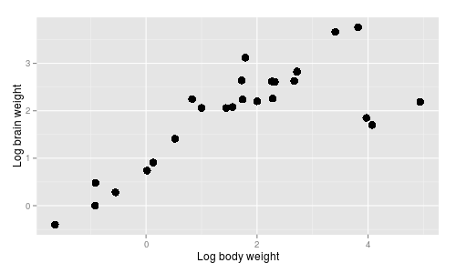
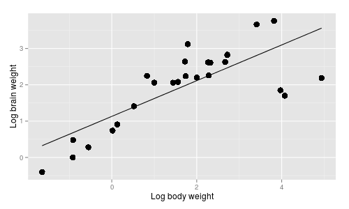
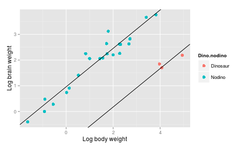
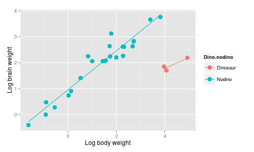

We will be working today with an approach to statistical inference that is based on comparisons of likelihoods among models, rather than on null hypothesis tests. With this approach each model is a hypothesis about the structure of the data, and we seek to find which hypothesis is best supported by the data. This is sometimes called the method of support.
Our approach throughout the semester has been to test a single hypothesis, the null, and reject it in favor of an unspecified alternative if we find that the probability of our result is low when we assume the null is true. This sets up a competition between two choices, when in fact one of the hypotheses is "no difference whatsoever" (the null), and the other is "any amount of difference other than no difference whatsoever" (the alternative). Since the alternative is actually not a single hypothesis, but an infinite number of different hypotheses, this is not really a choice between two hypotheses - it's a "false dichotomy".
The method of support is very different. Because the method is based on comparing sets of models, it isn't possible to test a single hypothesis alone, like we do with a null hypothesis - this is a feature, not a bug. By requiring us to specify different hypotheses about the relationship between predictors and response, the method of support forces us to evaluate sets of specific alternative hypotheses, rather than focusing on a single null.
There are several important points to bear in mind about the method of support:
-
It is model based, which means that we have to be able to express our hypotheses as linear models. For example:
-
If a predictor variable is included in the model, we are hypothesizing that the response depends on it. Conversely, if a predictor is excluded, we are hypothesizing that the response is independent of the predictor.
-
If we combine two or more levels of a categorical grouping variable together, we are hypothesizing that the two different levels have the same mean. If we split a single level into two or more different levels, we are hypothesizing that each new level has a different mean.
-
If we include a quadratic, cubic, or other higher-order term for a predictor, we are hypothesizing that the response has this specific non-linear relationship with the predictor.
-
If we include an interaction between two predictors we are hypothesizing that the response to one predictor depends on the level of the other.
-
-
Model-based inference only works if the same response data are used for every model. Any set of predictors can be included, and models can be compared even if they contain completely different sets of predictors. Specific cases that would be problematic are:
-
A missing value from one of the predictor variables causes R to drop the entire row from the analysis. If some models use the entire data set and others are missing a data point or two, you shouldn't compare the models.
-
You can only transform the response if you use the transformed response data for all of the models you fit. You can transform predictors, though, and can even compare a model with a transformed predictor to one with the un-transformed version of the predictor as two separate hypotheses.
-
-
Support for hypotheses is assessed at the level of the model. The relative importance of each predictor variable is assessed from the support for the models in which the predictor is included.
-
We have to assume a distribution of residuals around the model. If we are using linear models we are assuming a normal distribution of residuals, and we should assess the usual GLM assumptions for any model we wish to interpret. Models that are poorly supported that don't meet GLM assumptions are not a problem, but any model we wish to interpret should meet GLM assumptions.
- The end result of this approach is not a "test" of a hypothesis in the sense that there is no binary pass/fail decision made about the hypothesis. Measures of support for hypotheses, such as AIC's and model weights, are meant as relative measures, which we should use to gauge our confidence in our conclusions.
-
Measures of support do not substitute for measures of model fit, such as R2, because the best-supported model in the set we are considering could still be lousy. We should also always include an "intercept only" model to check the "no effect" hypothesis.
Although this method can be used to analyze any data set, it is most attractive for studies in which the null hypothesis is not plausible. As we discussed in lecture, this covers nearly all ecological studies, and any lab studies in which random allocation of subjects to treatments is not possible.
Today's exercise - the brain/body size relationship
The data set we will use today is here. Start a new R Studio project in a folder called "brains", and import the data into a dataset called "brains" as well. If you look at the way the data are organized you will see that it contains data on the log of brain mass, the log of body mass, the identity of the species (Species column), and four different hypothetical groupings of the species:
1) dinosaurs separate from mammals, mammals grouped by Order (column Taxa)
2) dinosaurs vs. non-dinosaurs (column Dino.nondino)
3) primates vs. non-primates (column Primate.noprimate)
4) dinosaurs, primates, and non-primates (column Dino.prim.other)
|
The brain/body data, without any grouping information, is shown in the graph to the right. Brain and body weight have both been log-transformed, which makes the relationship linear...which, by the way, tells you that brain and body weight have what kind of relationship? Click here to see if you're right You can see that there is a general, positive relationship between body size and brain size, which is as expected - a large part of the mass of the brain is devoted to simply operating the body, and with a greater mass of tissue to regulate, the brain has to be larger. |
 |
|
For this exercise, we are interested in finding a model that best represents the brain size/body size relationships of these species. To give you an idea of how this will work, let's look at a couple of examples of hypotheses we could evaluate. |
|
|
One possibility is that brain/body scaling is the same for all species, regardless of the taxonomic group they belong to, and a simple linear regression of log.brain on log.body would represent this hypothesis, like the graph to the right. The AICc value for this model is -16.89. |
 |
|
It looks like there is at least one cluster of three data points that are separate from the rest of the data, which you can see here are the dinosaurs. Dinosaurs are notoriously small brained, but it's possible that the change in brain weight per unit change in body weight is the same for both sets of species. If that's true, then a single slope may apply to both the dinosaurs and the mammals, with each needing a different intercept. You probably recognize this as an ANCOVA. It certainly looks like a separate line is desirable for the dinosaurs, and not surprisingly the AICc for this model of -57.21 is substantially lower than for the single line hypothesis above. This model is the better of the two, and if we subtract the AICc for this model from each of the first two, we would get a ΔAICc of 0 for this model, and 40.31 for the single line model. With just these first two models to consider, the simple linear regression can be safely disregarded in favor of this ANCOVA model. |
 |
|
However, it could be that the dinosaurs not only have different brain sizes on average, they may also have a different rate of change in brain tissue with increasing body size. If this is the case we need an interaction between log.body and Dino.nodino to allow each group to have a line with a different slope and intercept. This model is illustrated to the right. This model also looks pretty good, but we had to add an additional parameter to produce the differences in slope. The AICc value for this model is -56.98, not quite as small as the previous one. The previous model with parallel lines is still best supported (with a ΔAICc of 0), and this model with different slopes has a ΔAICc is 2.13. |
 |
Based on just these three models we could confidently conclude that dinosaurs and mammals are different enough to need their own lines (ΔAICc = huge), but whether their scaling relationships have the same slope or different slopes is less certain (ΔAICc = 2.13).
We will implement these three models, and several more that use the other grouping variables in the data set to determine which hypotheses are well supported by the data, and which are poorly supported.
Instructions:
Since this is the last exercise for the semester, save all of your R
output to a Word document, and then answer the questions at the bottom
of these instructions in the same Word document to complete the
exercise. You will then upload your Word file, with R output and
answered questions, to the class web site, by 12/06. We will go over the
exercise in class on the day the final exam is handed out, and your own
file will be graded by then so that this material can be included on the
final.
1. Plot scatter plots of log.brain (y-axis) vs. log.body (x-axis), grouped by:
- Taxa
- Primate.noprimate
- Dino.prim.other
The Dino.nodino graphs are done already, above. The regression R adds to the graphs will be fitted to each of the factor levels separately, so they won't be parallel lines; the lines are thus equivalent to models that include interactions between log.body and the grouping variable.
Copy each of the graphs to your Word file.
2. We will work from the command line today, so that you can learn more about the R "list" data structure.
R lists
Lists are a very flexible data structure in R. A list has a name, and can contain any number of named elements within it. Named elements can be nearly any other R object, from data frames to fitted model objects to graph specifications.
To start, we will create an empty list into which we can add our fitted models, with the command:
model.list <- list()
Now each time we fit a model we will add it as a named element of our model.list object.
For example, to assign our first fitted model to an element called body.lm within our model.list object, we can use the command:
model.list$body.lm <- lm(log.brain~log.body, data = brains)
If you type the name of the list and hit Enter you will see the name you assigned with a dollar sign in front of it, $body.lm, followed by the very brief output R presents for a fitted model. We can ask for the summary that gives our model summary statistics with the command:
summary(model.list$body.lm)
The output should look like standard model summary output:
Call:
lm(formula = log.brain ~ log.body, data = brains)
Residuals:
Min 1Q Median 3Q Max
-1.4316 -0.3704 0.1821 0.3718 1.1089
Coefficients:
Estimate Std. Error t value Pr(>|t|)
(Intercept) 1.13044 0.19369 5.836 5.10e-06 ***
log.body 0.49165 0.08202 5.994 3.46e-06 ***
---
Signif. codes: 0 '***' 0.001 '**' 0.01 '*' 0.05 '.' 0.1 ' ' 1
Residual standard error: 0.6901 on 24 degrees of freedom
Multiple R-squared: 0.5995, Adjusted R-squared: 0.5828
F-statistic: 35.93 on 1 and 24 DF, p-value: 3.459e-06This general "list.name$model.name" approach can be used for any function - if we want an ANOVA table for the model, we just need to use:
anova(model.list$body.lm)
which will give you a Type I SS ANOVA table for the model.
Okay, now that you have a basic idea of how lists work, and have the first model assigned to model list, it's time to add the rest of the models in the table below to model.list. For example, to address scientific hypothesis 2 (same scaling relationship, with different averages by taxa) we would use as our linear model an ANCOVA of log.brain by taxa with log.body as a covariate. The command to add this model to model.list would be:
model.list$taxa.lm <- lm(log.brain ~ log.body + Taxa, data = brains)
Note what is different in this command than the first one:
- The name of the model added to model.list (taxa.lm) is from the "Name of model to use" column for hypothesis 2.
- The model statement (log.brain ~ log.body + Taxa) comes from the "R model statement" column for hypothesis 2.
Assigning the output of the lm() to model.list$taxa.lm adds the model to model.list under the name taxa.lm. Each time you move to a new hypothesis, fit a model that matches the R model statement, using the appropriate model name.
Since this method uses models to represent hypotheses, you should get some practice translating hypotheses into models. The rest of the R model statements are hidden - see if you can figure out what the R model statement should be before clicking on "What is the model?".
| Scientific hypothesis | Hypothesis as a linear model | R model statement: | Name of model to use |
| 1. There is a single common brain/body scaling relationship for all species in the set. | Simple linear regression of log.brain on log.body | log.brain ~ log.body |
body.lm |
| 2. The scaling of brain size and body size is the same for all species, but taxa differ in their average brain sizes for their body size. | ANCOVA of log.brain by taxa, with log.body as a covariate | log.brain ~ log.body + Taxa |
taxa.lm |
| 3. Each taxa has a different scaling relationship. | ANCOVA of log.brain on taxa and log.body, with an interaction between log.body and taxa. | What is the model? | taxa.int.lm |
| 4. Brain/body scaling is the same for dinosaurs and non-dinosaurs, but with different averages between the groups. | ANCOVA of log.brain by dino.nodino, with log.body as a covariate | What is the model? | dino.lm |
| 5. Brain/body scaling is different for dinosaurs and
non-dinosaurs. |
ANCOVA of log.brain on dino.nodino and log.body, with an interaction between dino.nodino and log.body | What is the model? | dino.int.lm |
| 6. Brain/body scaling is the same for primates and non-primates,
but with different averages between the groups. |
ANCOVA of log.brain by primate.noprimate, with log.body as a covariate | What is the model? | primate.lm |
| 7. Brain/body scaling is different for primates and
non-primates. |
ANCOVA of log.brain on primate.noprimate and log.body, with an interaction between primate.noprimate and log.body | What is the model? | primate.int.lm |
| 8. Brain/body scaling is the same for dinosaurs, primates, and
other mammal, but with different averages between the groups. |
ANCOVA of log.brain by dino.prim.other, with log.body as a covariate | What is the model? | dpo.lm |
| 9. Brain/body scaling is different for dinosaurs, primates, and other mammals. | ANCOVA of log.brain on dino.prim.other and log.body, with an interaction between dino.prim.other and log.body | What is the model? | dpo.int.lm |
| 10. There is no predictable relationship between brain size and
body size for these species. In other words, brain size is
independent of body size. |
The "intercept only" model. | log.brain ~ 1 | intercept.only.lm |
IF YOU MAKE A MISTAKE read this for the fix (otherwise skip to step 3 below).
- If you make a mistake in the model statement, but used the correct model name, edit the command and assign the correct model to the same named list element. The mistake will be replaced by the corrected model.
- If you use the right model statement but used the wrong model name,
you can change the name if you know the number of the model. Check the
names in your list with:
names(model.list)
Look at the number of the named elements, and find the number for the incorrect one. For example, if you get names:
[1] "boody.lm" "taxa.lm" "taxa.int.lm" "dino.lm"
[5] "dino.int.lm" "primate.lm" "primate.int.lm" "dpo.lm"
[9] "dpo.int.lm" "intercept.only.lm"
The incorrect name is the first in the list, index number 1. You can change its name with:
names(model.list)[1] <- "body.lm"
This will replace the wrong name with the right one. - If you accidentally included a model that you don't want, use the
command:
model.list$mistake.name <- NULL
This will delete the model from the list.
3. We can use sapply() to extract each model's AIC statistics from model.list. R's extractAIC() function extracts AIC and number of parameters from a fitted model. Try it out on the first model, body.lm, with the command:
extractAIC(model.list$body.lm)
You will get two values, the first being the number of parameters in the model (2, which is K in the AIC formula), and AIC (-17.36706). We can use extractAIC() as the function in an sapply() command, which is just like the lapply() command except that it gives a matrix as output. The command is:
model.aic <- sapply(model.list,
extractAIC)
If you type model.aic you'll see that we got the information we want, but in the wrong orientation - each model is a column instead of a row, and our numbers of parameters and AIC's are rows instead of columns. Fortunately, swapping rows and columns is a simple matrix operation called "transposition". We can transpose the matrix using the t() command:
model.aic <- t(model.aic)
If you type model.aic again you'll see it now has the orientation we want. Since we transposed model.aic and assigned it back to model.aic this command wrote over the original model.aic object with the correct one. This is a little risky, because if we make a mistake in the command we no longer have the original model.aic object, and would have have to re-construct it - when I'm working in R I will usually try commands first without assignment to make sure they are correct, and then issue them again with the assignment.
Convert the matrix to a data frame with:
model.aic <- data.frame(model.aic)
If you type model.aic you'll see you now have the data organized as we want, but without informative column names. We can add column names to the model.aic data frame with:
colnames(model.aic) <- c("K","AIC")
The c() command combines the column names into a vector, and then replaces the names X1 and X2 with them.
4. Now that we have AIC and the number of parameters for each model in our model.aic data frame, we can calculate AICc. AICc is just AIC plus a penalty for each parameter equal to 2k(k+1)/(n-k-1); k is the number of parameters in the model, and n is the sample size (which is 26 for this data set).
The calculation is thus:
model.aic$AICc <- with(model.aic, AIC + 2*K*(K+1)/(26-K-1))
This command uses the with() function to identify the data frame we are using (model.aic) so that we can just use variable names in our calculation. If we didn't use with() we would have to name the data frame every time we used a variable name, like so:
model.aic$AICc <- model.aic$AIC + 2*model.aic$K*(model.aic$K+1)/(26-model.aic$K-1)
Using with() makes the formula easier to read, cuts down on opportunities for typos, and makes errors easier to spot.
If you type model.aic, you'll see there is now a column called AICc with the results of these calculations.
5. We can now calculate delta AIC values, which are much easier to interpret than the raw AICc values. The command is:
model.aic$dAICc <- model.aic$AICc - min(model.aic$AICc)
This command takes the AICc's we just calculated and subtracts the smallest AICc from each of them. Type model.aic and you'll see that the model with the smallest AICc now has a dAICc of zero, and the rest are differences from this model's AICc.
6. Finally, let's calculate the Akaike weights. Remember, these are measures of how often we would expect the model to be best-supported if we repeated the exercise with new data; they are useful for attaching a more intuitive interpretation of degree of support for the models than we get from the ΔAICc values alone. These are calculated as:
model.aic$wts <- with(model.aic, exp(-0.5*dAICc)/sum(exp(-0.5*dAICc)))
We are using a sum() function to sum up the values of exp(-0.5*dAICc), and then we are dividing each model's exp(-0.5*dAICc) by this sum.
It's easier to compare the weights if we suppress the scientific notation - use the command:
format(model.aic, scientific = F)
You should see that the weight is biggest for the model with a delta AICc of 0, but for models with delta AICc's less than 4 the weights are still fairly high. The weights indicate the relative frequency with which we would expect the model to be best if we collected a new data set - you can see that some are very poorly supported by the data compared with the others (the intercept only model), but there is not a strong basis for favoring the best-supported model over the next best-supported, because the delta AICc for the second best is only 1.61.
7. For the last step we will extract multiple R-squared and adjusted R-squared values for each model, so that we can see whether the best supported model according to the AICc statistics is also the one with the highest adjusted R-squared.
We will get the values we need with two different sapply() commands. First, the r-squared values:
rsq <- sapply(model.list, function(y) summary(y)[["r.squared"]])
This sapply() takes the model list and applies the summary command to each named element, and from each summary the r-squared statistic is extracted. If you type rsq at the command line you'll see the r-squared for each model.
Next, do the same trick to get adjusted r-squared:
rsq.adj <- sapply(model.list, function(y) summary(y)[["adj.r.squared"]])
The sort order of the models is the same as in model.aic, so we can combine these values with the AIC statistics with the command:
model.stats <- data.frame(model.aic, rsq, rsq.adj)
Look at the model.stats object using format(model.stats, scientific = F). You'll see you have the classic adjusted R-squared statistics along with the AICc based model selection statistics so you can compare how they work. The comparison will be easier if we put the sort order based on AICc and based on adjusted r-squared into the data frame. Add the AICc sort order with:
model.stats$AIC.order <- rank(model.stats$dAICc)
Add the sort order using adjusted R2 with:
model.stats$rsq.adj.order <- rank(-model.stats$rsq.adj)
Note that there is a negative sign before the reference to the adjusted r-squared, because we want get adjusted R2 in decreasing order to make it comparable with AICc. If you type model.stats you'll see that the orders are not the same - adjusted R2 selects taxa.lm as the best model, but dpo.lm is best supported according to AICc.
Traditionally, tables of AIC statistics are sorted on dAICc to make it easier to see which models are best supported, which you can do with the command:
model.stats <- model.stats[order(model.stats$dAICc), ]
If you type model.stats at the command line you'll see the rows are now in order based on the dAICc column.
Copy this version, with sort orders included, to your Word file.
8. At this point we have information about how much support there is for each hypothesis in the data, but that's only the first step in data analysis. We can address how well supported individual variables are by summing the weights for the models each variable appears in. We won't do this for every variable, but there are two that seem to be important:
-
The variable Dino.prim.other is included in two models, so the weight for the variable is the sum of the weights for the two models in which it was included.
-
The variable log.body is included in all but the intercept only model, so its weight would be the sum of the weights of all the models except for int.only.lm (or, it's 1 minus the weight for int.only.lm, if that's easier to calculate).
Make these two calculations and report them in your Word document. You can just use the first three decimal places. You'll see that both of these variables have very high levels of support; thus, even though we aren't certain whether the best model should include an interaction with Dino.prim.other and log.body, we can be very certain that these two variables are important to include. In contrast, the variable Taxa also appears twice, but in models with much lower weights - the sum of the weights for the two models with Taxa included is only 0.09, and we should have less confidence that taxa other than dinosaurs, primates, and all other mammals need to be considered separately. All of the other predictors appear in models with essentially no support, so their weights are all very small.
We won't be taking the interpretation of our models any further today for lack of time, but if we were, all of the interpretation steps we have used all semester are still appropriate here. For example, our models are ANCOVA's, so for the best supported models we could:
-
Look at the model R2 to measure the amount of variation in brain size is explained by the model. Remember, the best-supported model in a set under consideration may still be pretty bad - we would like to see a nice high R2 before we invest much confidence in our model's predictions.
-
Use least squares means to compare the brain sizes across the levels of the categorical variable, if no interaction was included.
-
Compare the slopes across the categories, if an interaction is included.
9. Answer the following questions at the bottom of your Word file, after your R output.
A. Based on the graphs from step 1, which grouping looked like it would account for the greatest amount of variation among species (and would thus have the highest likelihood)?
B. Do you see any possible problems with fitting a separate line for each species grouping (particular when you color by Taxa)? Specifically focus on sample size issues - do we really have the sample sizes to get robust estimates of slopes and intercepts for all taxa?
C. Look now at the AIC-based statistics. Which model is best supported (ΔAICc = 0)? Based on the weights (wi's), are any other models fairly well supported?
D. Interpret models with ΔAICc less than 4. What do they have in common, and how are they different? Do they include the same predictors?
E. Look at the sort order of the model statistics based on the ΔAICc, and compare it with the adjusted R2 values. Is the ordering of models based on ΔAICc the same as the ordering based on adjusted R2?
F. How do we know that the best supported model is any good at all? How do we know that it's better than random chance (that is, do we have a null hypothesis that we can reject with this approach)?
That's it! Upload your Word file and you're all done. Next stop, final exam!